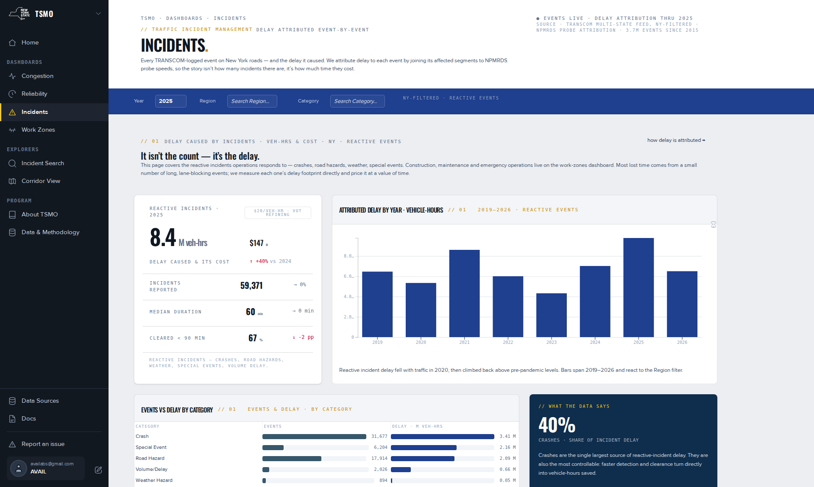

Incidents dashboard.
The delay that reactive incidents caused, event by event: crashes, road hazards, weather and special events. Construction, maintenance and emergency operations are on Work Zones. What each panel shows, on what basis, and how it is computed.
What this page answers
"What happens on the network & how well we clear it." How much delay reactive incidents added in a year and region, how long they lasted and how fast lanes reopened, which categories and months carried the delay, and which single events hurt most. The page's own line: it is not the count, it is the delay.
Filters
Year, Region and Category. The bar is annotated NY-filtered · reactive events. Category offers Crash, Message, Other, Road Hazard, Special Event, Volume/Delay and Weather Hazard. See Using the filter bar.
It isn't the count, it's the delay
The headline card gives attributed delay in vehicle-hours and its cost for the filters. Attributed delay by year · vehicle-hours plots 2019 to 2026 and follows Region. Events vs delay by category sets each category's event count beside its delay.
How it is computed. How much delay did incidents cause, and how quickly were they cleared? Each event's footprint is its affected segments and 5-minute slices with delay above the recurrent baseline, summed to vehicle-hours; events without a footprint carry a dash, not a zero. See Incident delay and clearance.
- The axis scales to the data. A small region reads in thousands with full-height bars; it once rounded to nothing below 0.1 million.
- Bars start at 2019 because attribution is sparse before then. 2026 is a partial year.
- The caption: reactive incident delay fell with traffic in 2020, then climbed back above pre-pandemic levels.
Duration & clearance
Incident duration distribution is a histogram in minutes, with the median, a percentile and the share cleared within thresholds summarised in a card beside it.
- Duration is the estimated duration recorded on about 99 % of events. Values cluster at round estimates.
- Clearance is measured, lanes open minus start, only where the timestamps exist. The Data & Methodology page gives lanes-open on 42.7 % of events and verification on 20.1 %. This page's method note says about 68 %. The panel's badge names the share it was computed on; the 42.7 % on the Data & Methodology page is the all-events share, and the Incidents page's reactive subset has its own.
The incident landscape
Events vs delay by month · share of annual total sets each month's share of the year's events beside its share of the year's attributed delay. Each is normalised to its own annual total. Where the delay bar tops the events bar, that month's incidents ran worse than average. Reacts to Region and Year.
Highest-delay events
The Recent & major events table ranks individual events by attributed vehicle-hours: date, category, facility, county, duration, delay and cost at the interim $20 basis. Only events with a measurable footprint appear. Each row carries a view → link that opens the incident page.
A card headed "Where incidents cluster" describes a map of event points by category. The map is not built; the card carries a placeholder note.
How incidents are measured
The method note at the foot of the page. Counts and categories come from TRANSCOM's feed filtered to New York, and the page keeps the reactive set. Delay is attributed per event against the recurrent baseline; about one in five events carries a footprint, and attribution is reliable from 2019. Dollars are an interim $20, with a class-weighted rate being applied at the data layer. See Which pages show which basis.
Downloads
No download control on the page. Data & Methodology › Downloads & API lists the event-by-segment delay tables. For a row-level list with a view link per event, use Incident Search.

References
- TSMO Incidents dashboard, published 2026-07-28: band titles, captions, status line, method note.
- TSMO Data & Methodology page: TIM timestamp completeness 42.7 / 20.1 / 10.6 / 0.3 % of 3.7 M events, queried 2026-06-22.
- TSMO About page: "Incidents — what happens on the network & how well we clear it".
- Feedback records: scope and category list (2195387, 2195001) · adaptive axis (2192555) · statewide label (2195001).